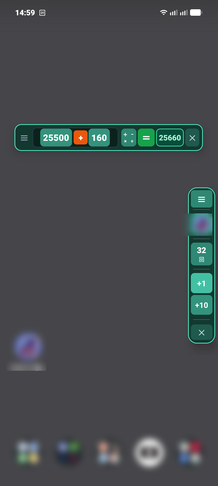
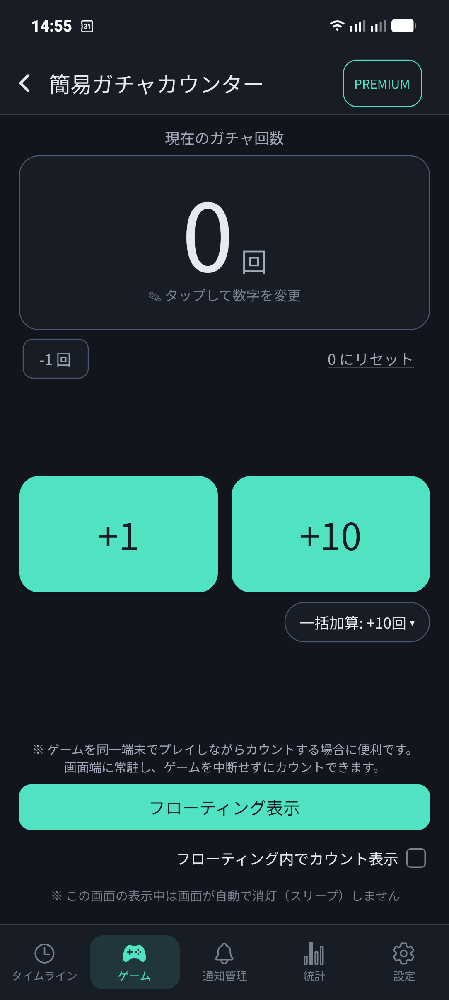
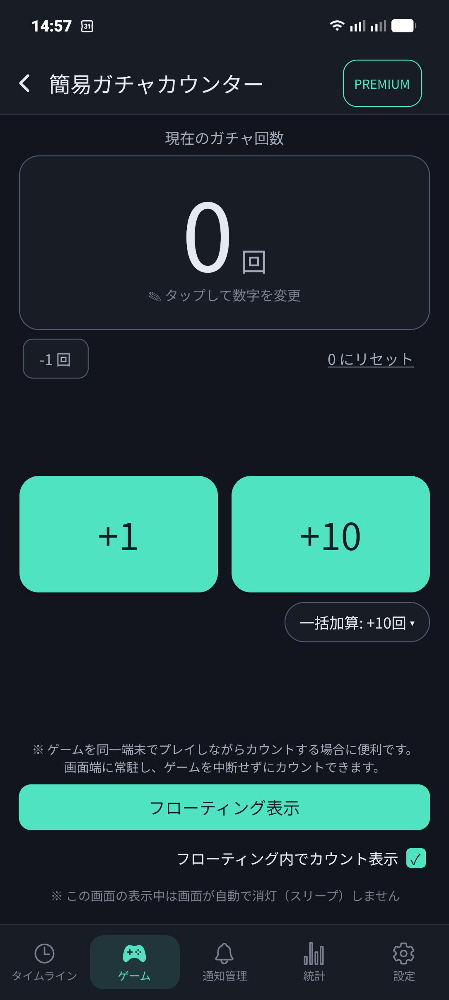
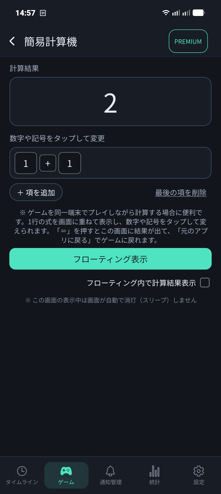
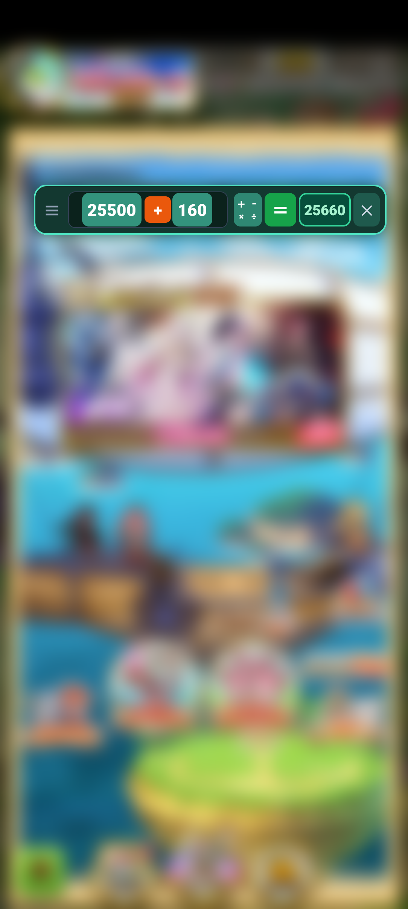
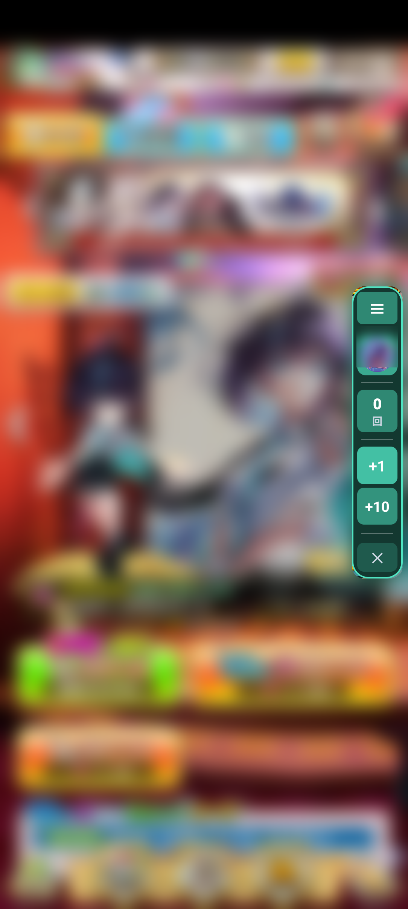
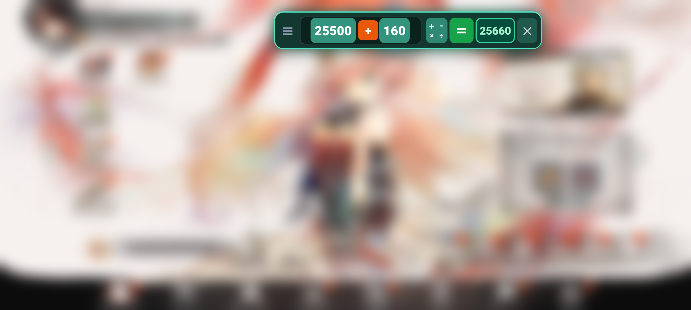
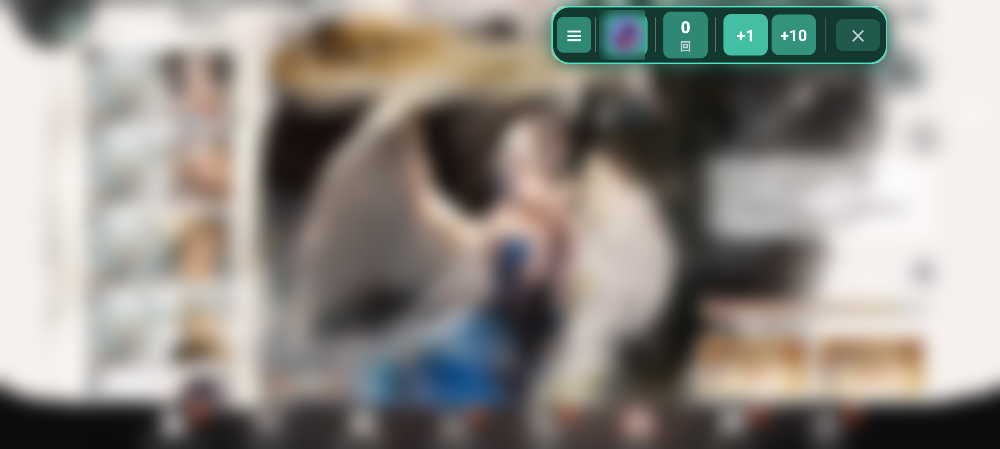

🧮 3. ゲーム常駐便利ツール（計算機＆ガチャカウンター）
「スタミナ手帳」には、ゲームプレイヤーのために設計された2つの強力なツール「簡易ガチャカウンター」と「簡易計算機」が搭載されています。ゲームを起動したまま画面端に重ねて操作できる「フローティング機能」に対応しています。

画面上にオーバーレイ常駐する簡易計算機バー（上）と簡易ガチャカウンターバー（右）
🎲 簡易ガチャカウンター
「天井まであと何連回したかわからなくなった」「単発チケットと10連の合計を記録したい」という時に最適なカウンターです。

簡易ガチャカウンター：現在の回数、+1、+10、一括加算設定

「フローティング内でカウント表示」にチェックを入れるとゲーム画面のままカウント可能
- 「+1」「+10」ボタン：ワンタップでガチャ回数をすばやくカウントアップ。
- 一括加算カスタマイズ：「一括加算：+10回 ▼」から、ゲームに応じた連数（11連など）に切り替え可能。
- 数字の直接変更・リセット：カウント数字をタップして自由に変更したり、「0にリセット」「-1回」で修正できます。
- スリープ防止機能：この画面を表示中は画面が自動消灯（スリープ）しないため、長時間のガチャ配信や作業中も安心です。
➕ 簡易計算機
「あと何周でイベントポイントが目標に届くか」「スタミナ回復薬が何個必要か」など、ゲーム中にサクッと1行の計算式を組み立てられる計算機です。

簡易計算機：項を追加して式を組み立て、計算結果を確認

「フローティング内で計算結果表示」で画面端のバーに答えを直接表示
- 数字や記号をタップして変更：数字や「＋」「ー」「×」「÷」をタップして式を簡単に作れます。
- 項の追加・削除：「＋ 項を追加」で複数の数値を組み合わせた計算もスムーズに行えます。
📱 ゲームプレイ中の常駐表示（縦画面＆横画面に対応）
「フローティング表示」を押すと、操作バーがゲーム画面の端にオーバーレイ常駐します。縦スクロール型RPGや横画面のアクションゲームなど、ゲームの画面の向きに合わせて邪魔にならない位置へスマートに配置されます。
縦画面ゲームでの常駐例

縦画面ゲーム：画面上部に計算機バーを常駐させて目標ポイントをリアルタイム計算

縦画面ゲーム：画面右端にガチャバーを常駐させてガチャを引きながらカウント
横画面ゲームでの常駐例

横画面ゲーム：画面上端の空きスペースに計算機バーをスマートに常駐

横画面ゲーム：ガチャ画面の邪魔にならない位置で回数をカウント
💡 画面を切り替えずにカウントを続ける設定
「フローティング内でカウント表示」「フローティング内で計算結果表示」にチェックを入れておくと、カウントボタンを押した際にメインアプリへ戻る画面切り替えが発生せず、ゲーム画面を表示したまま連続でカウント・計算できます。